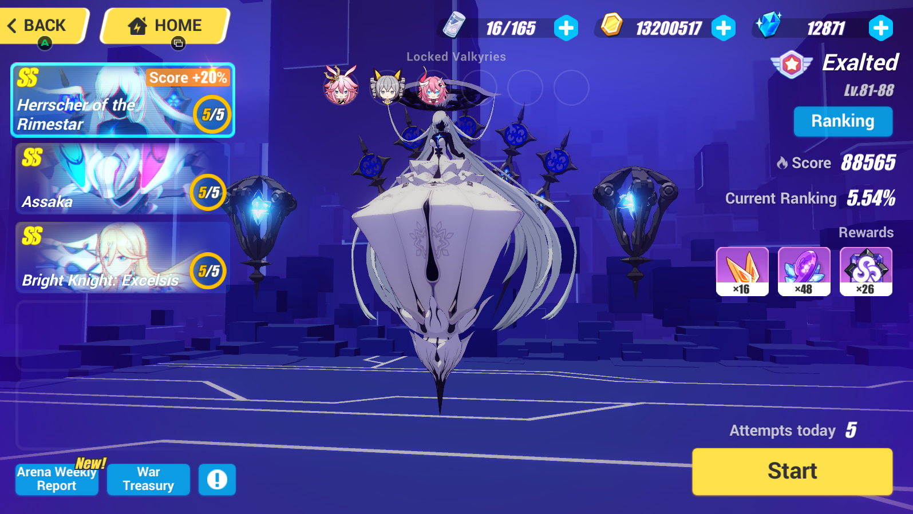

El Memorial Arena es un sistema de simulación de campo de batalla diseñado y construido por Schicksal para entrenar Valkyries. Los datos reales se utilizan para simular los enemigos más poderosos que se encuentran en el Universo Honkai. Las valquirias intentarían estas desafiantes peleas de jefes para mejorar sus habilidades de combate.
Un aspecto clave de Memorial Arena es que Valkyries utilizará un dispositivo de simulación para acceder a la Arena y comenzar la batalla de simulación contra un enemigo poderoso. Una vez conectados, sus recuerdos deben mantenerse en un estado estable y controlado.
Recordatorio: las valquirias desplegadas en el Memorial Arena para el entrenamiento estarán bloqueadas hasta que finalice el ciclo de entrenamiento. ¡El equipo (armas y estigmas) usado por Valquirias bloqueadas no puede ser usado por otras Valquirias!
Entrenarás con otros capitanes y sus valquirias en el Memorial Arena. Serás agrupado según tu nivel y competirás con otros capitanes del grupo. Las clasificaciones finales solo se basan en la puntuación.
Las clasificaciones finales en el Memorial Arena se basan en la puntuación total. La puntuación total es la suma de la puntuación más alta obtenida al derrotar a cada jefe. Envía una alineación adecuada para maximizar tu rendimiento en combate.
Recordatorio: las derrotas también deducirán un intento de desafío en la arena. Los puntos obtenidos se basarán en su desempeño.
Puedes renunciar a la pelea a mitad de camino para preservar tu intento.